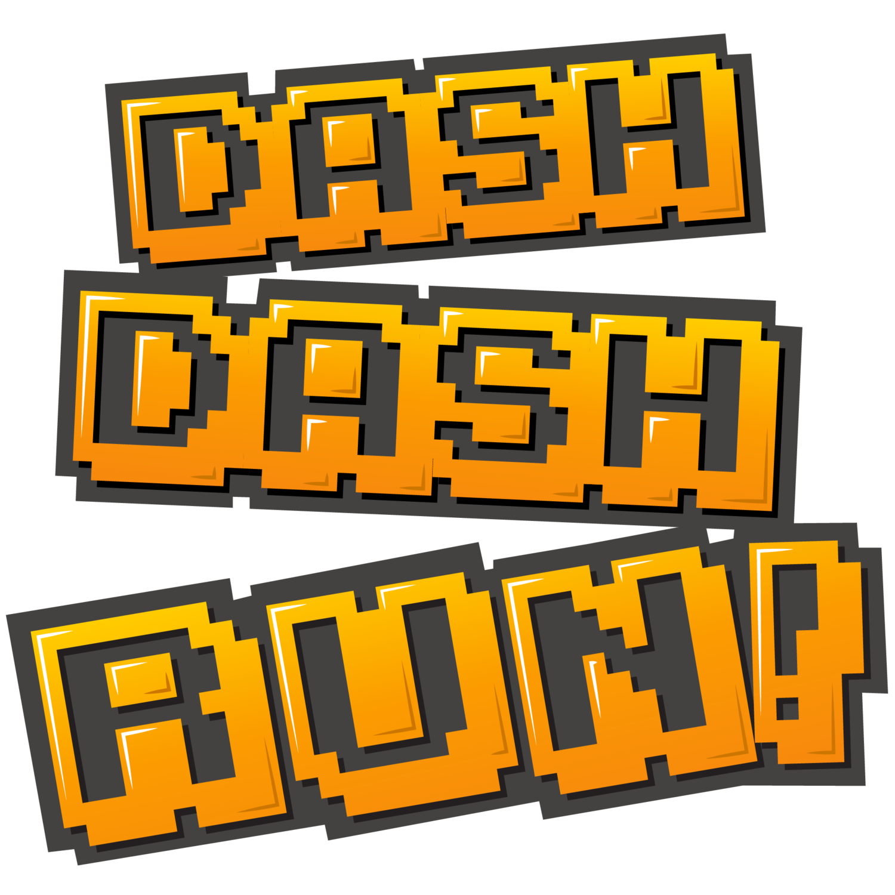

Jarret Dyrbye
Software Developer
Edmonton, Alberta, Canada
PrimeVR - Founder - January 2017 to Present
PrimeVR was founded to explore interesting applications of VR and cryptocurrency technology.
Sparkshot June 2018 to Present

Forkdrop Suite - May 2018 to Present

An open source set of tools and process to assist in claiming Bitcoin fork tokens while retaining privacy and anonymity.
Forkdrop - December 2017 to Present

A detailed directory of Bitcoin fork projects and cryptocurrency exchanges which allow deposit and trade.
(Canceled WebVR Art Project) - August 2017 to December 2017
A web-delivered and web-based VR experience for the visualization and enjoyment of tokenized memes and collectables.
(conceptual predecessor to Sparkshot.io)
Dash Dash Run! - February 2017 to August 2017
A virtual reality arcade running game for HTC Vive and Oculus Rift

EMC VPLEX - Senior Software Engineer (9 years)
Dell EMC - October 2016 to January 2017
EMC - September 2008 to October 2016
YottaYotta - January 2008 to September 2008
EMC VPLEX is a virtual computer data storage product introduced by EMC Corporation in May 2010. VPLEX implements a distributed "virtualization" layer within and across geographically disparate Fibre Channel storage area networks and data centers.
University of Alberta
Master of Science in Electrical and Computer Engineering, 2008
Thesis work in AI, Machine Learning involving Neuro-fuzzy networks applied to classification of system workloads. (full thesis)
Bachelor of Science in Computer Engineering, 2005
Computer Engineering: Software Option specialization.
Capstone project work: PalmOS mobile development and applied cryptography.